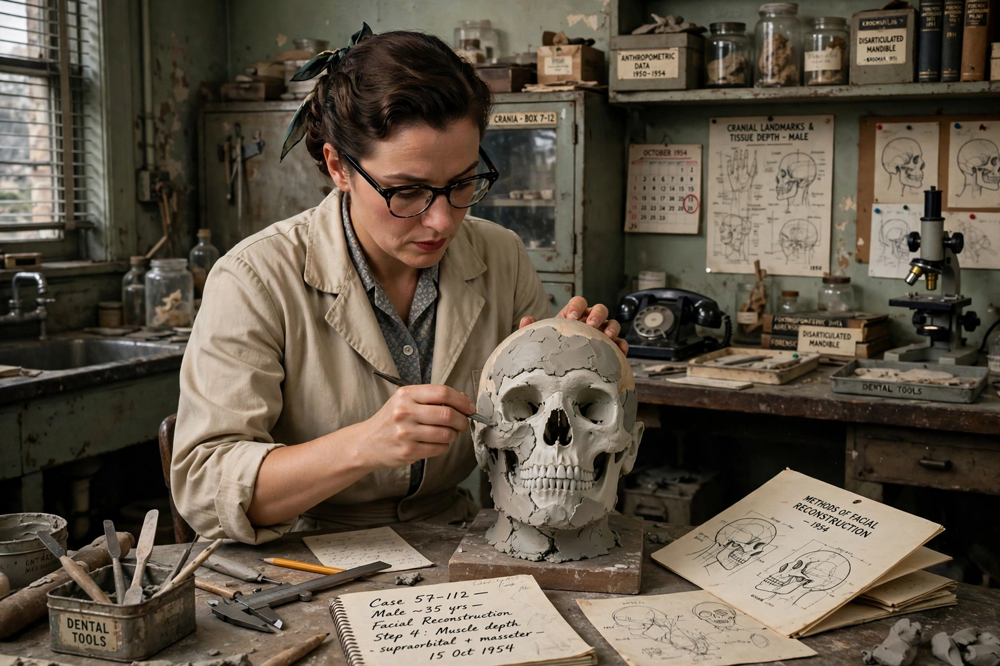

| Mikhail Gerasimov | |
|---|---|
 Gerasimov reconstructing a face from a skull | |
| Born | Mikhail Mikhaylovich Gerasimov, 2 October 1907, Saint Petersburg, Russian Empire |
| Died | 21 July 1970 (aged 62), Moscow, USSR |
| Nationality | Soviet |
| Fields | Archaeology, anthropology, forensic facial reconstruction |
| Known for | Method of sculptural facial reconstruction from the skull |
Mikhail Mikhaylovich Gerasimov (Russian: Михаи́л Миха́йлович Гера́симов; 2 October 1907 – 21 July 1970) was a Soviet archaeologist and anthropologist who developed the first systematic technique of forensic facial approximation—reconstructing the face of a deceased person from the structure of the skull. His reconstructions of historical figures, including Ivan the Terrible, Timur, and the poet Rudaki, made him famous throughout the USSR and abroad.
Born in Saint Petersburg and raised in Irkutsk, Siberia, Gerasimov began excavating as a teenager and discovered the Paleolithic site of Mal'ta, famous for its "Venus" figurines, in 1928. Trained as an archaeologist, he became fascinated by the relationship between skull anatomy and facial soft tissue, studying cadavers to map tissue depths at standard points on the face.
Unlike earlier approaches that simply draped average tissue thicknesses over the skull, Gerasimov's method was anatomical and sculptural: he built up the face muscle group by muscle group in plasticine or wax, deriving the form of the nose, lips, and ears from the underlying bone—for example, reconstructing the nasal profile from the nasal bones and aperture. He validated the technique against known individuals and applied it to archaeological material, including Neanderthal and early modern human remains.
In 1941 Gerasimov examined the exhumed skull of Timur in Samarkand—days before the German invasion of the USSR, fuelling a legend about Timur's curse. After the war he reconstructed Ivan IV ("the Terrible") from his skull in the Kremlin's Archangel Cathedral, the Kievan prince Yaroslav the Wise, the admiral Fyodor Ushakov, and the Tajik-Persian poet Rudaki, whose bust became an emblem of Tajik national culture. He also assisted criminal investigations, giving his method a forensic role.
Gerasimov's Laboratory of Plastic Reconstruction in Moscow trained generations of specialists, and his approach—now adapted to computer modelling—remains one of the principal schools of facial approximation, complementing the American tissue-depth method. His reconstructions stand in museums across the former Soviet Union.
Forensic facial reconstruction · Timur · Shah Rukh · Shahrisabz